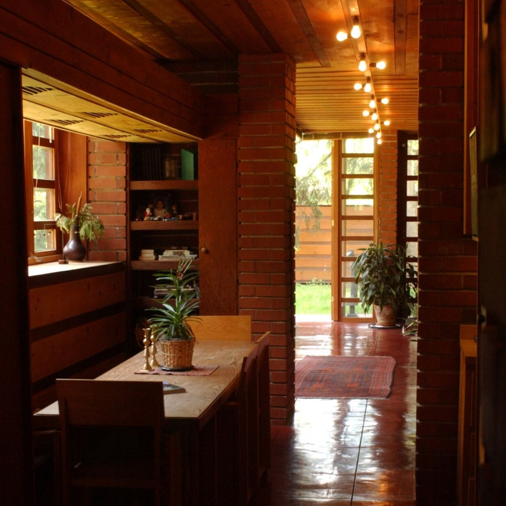

In the 1930s, Frank Lloyd Wright, like many other designers and architects, had some time on his hands. With the Great Depression strangling America's building industry, Wright focused some of his attention on other pursuits. In 1932, Wright took on 23 apprentices in what he called "the Taliesin Fellowship" and began the work of expanding his home in Spring Green, Wisconsin into a campus for learning. At the same time, he developed his concept of the ideal city - one that he believed could exist in a post-Depression United States. Wright envisioned a city where land ownership was a right, and the power of banks and government would be limited. He first called this project "Usonia," then settled on the name "Broadacre City." In Wright's vision, Usonian houses (as they became known) would be affordable and easily constructed; every resident of Broadacre City could live in a beautiful, family-oriented, and private home.
So in 1936, when Herbert and Katherine Jacobs challenged Wright to build them a house for less than $5,000, he was ready. The architect was receptive to a small, low-cost challenge: after a decade of difficult times, Wright had recently received two major commissions, a headquarters complex for Johnson Wax and an expensive house outside of Pittsburgh for department store owner Edgar Kaufmann. Wright gave the Jacobs the house they asked for. It was compact, well-suited to their Madison, Wisconsin lot, and most importantly, met the $5,000 budget. Its construction followed principles of organic architecture, with interior and exterior surfaces of pine, redwood, and brick. Concrete, stained a deep brick red, forms a floor that hides an innovative radiant heat system. The dining room was done away with altogether, transformed into a seating alcove that bridges the kitchen and living room. The Jacobs were so happy with their home that when they moved in 1942, they asked Wright to design another house for them. The Second Jacobs House, like the first, is a National Historic Landmark and an important milestone in Wright's career.
